Corese-GUI
Corese-GUI is the desktop application of the Corese Semantic Web stack. It provides a visual workspace to load RDF data, run SPARQL queries, inspect results, validate data with SHACL, and reason with rules.
From the 5.x line, Corese-GUI has been rebuilt with JavaFX and a modular architecture. The interface is organized around dedicated Data, Query, Validation, Logs, and Settings views.
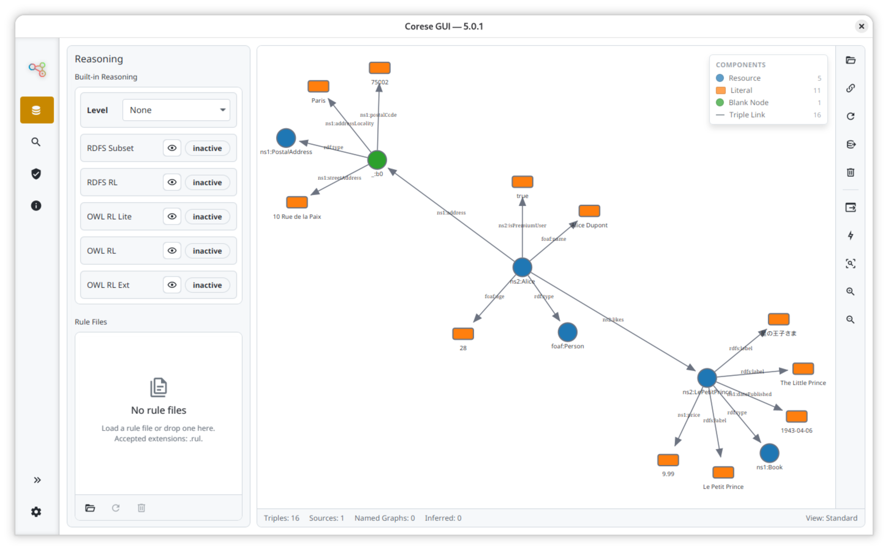
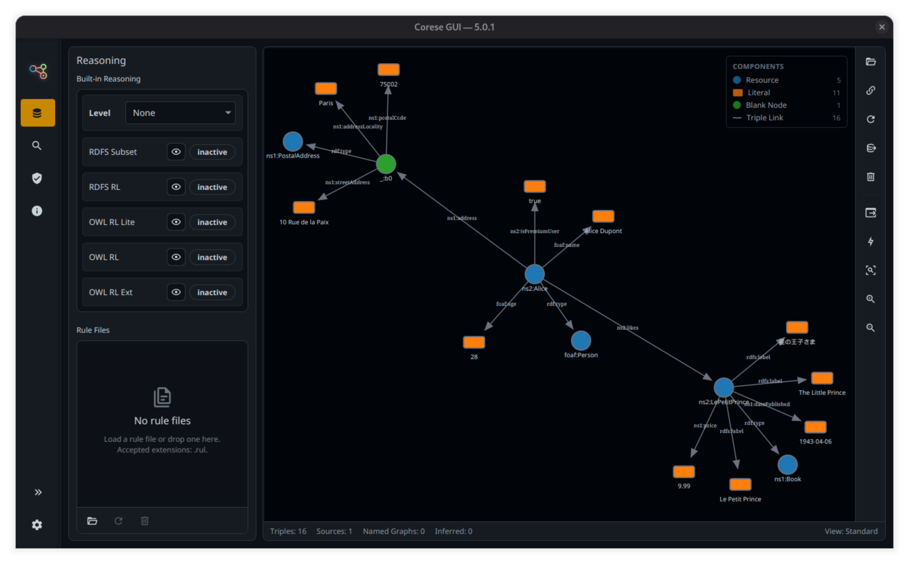
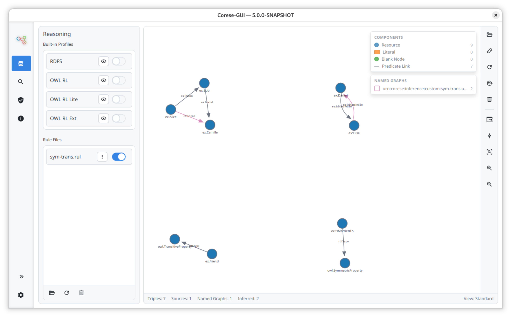
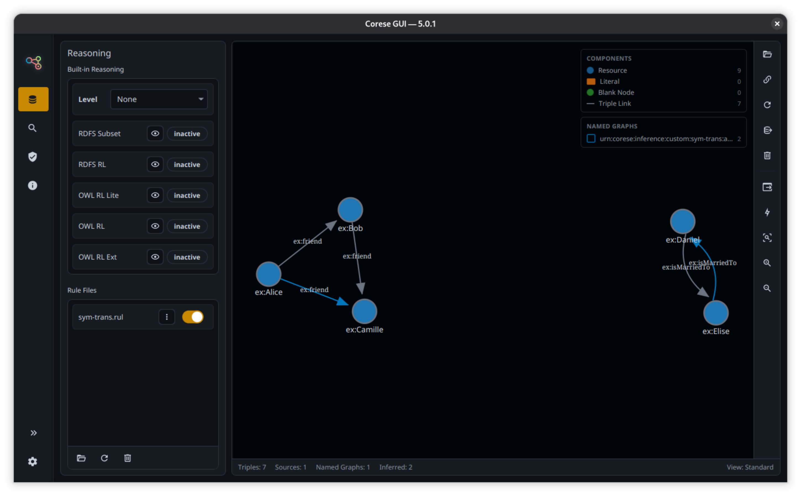
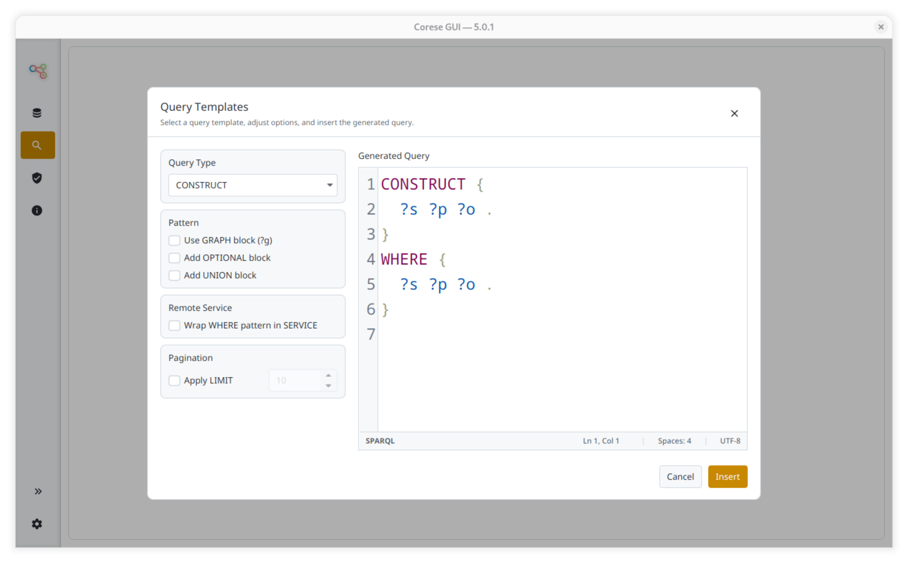
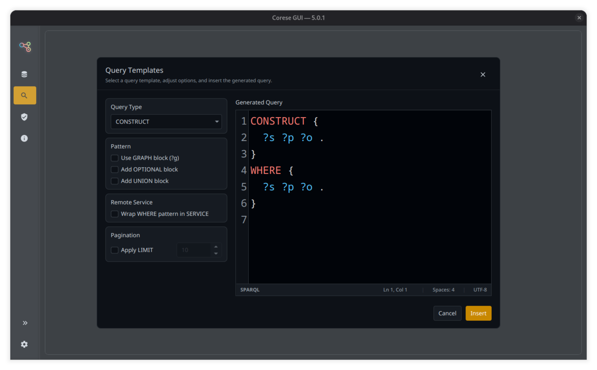
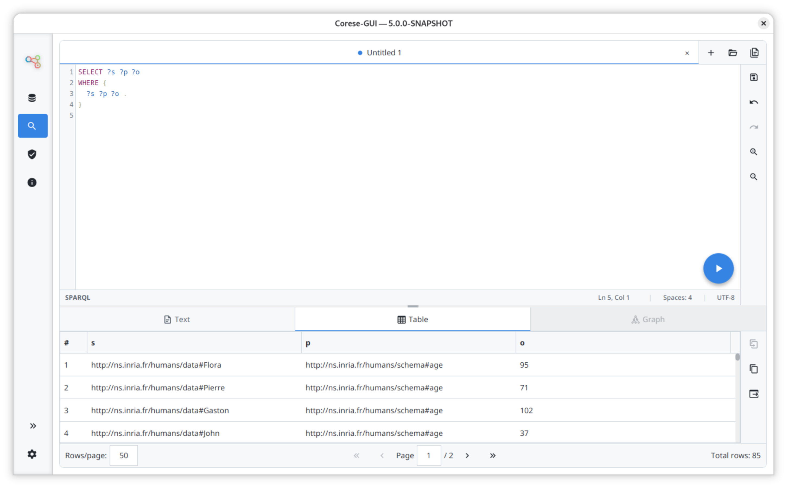
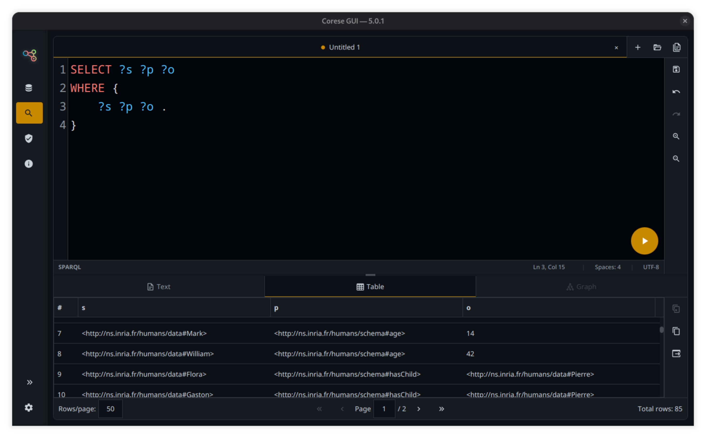
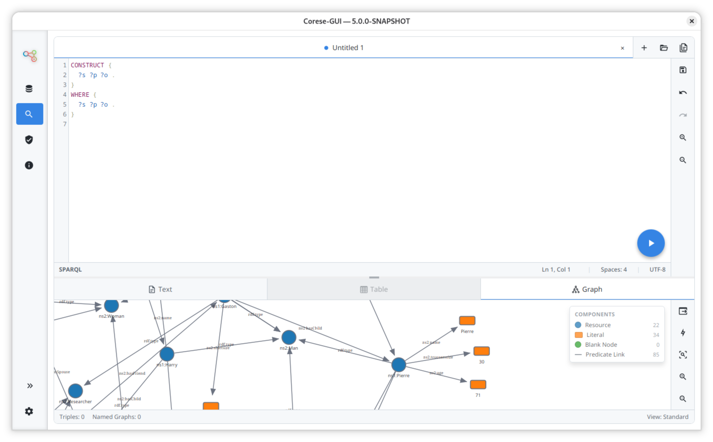
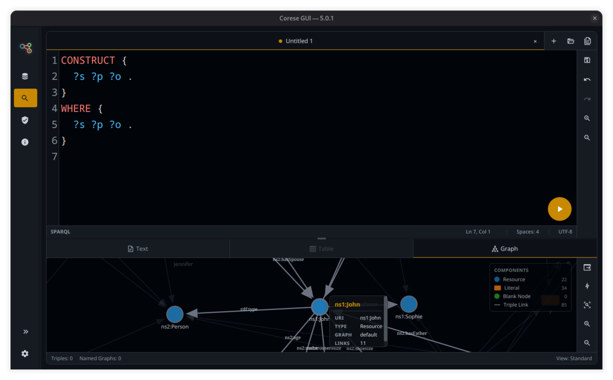
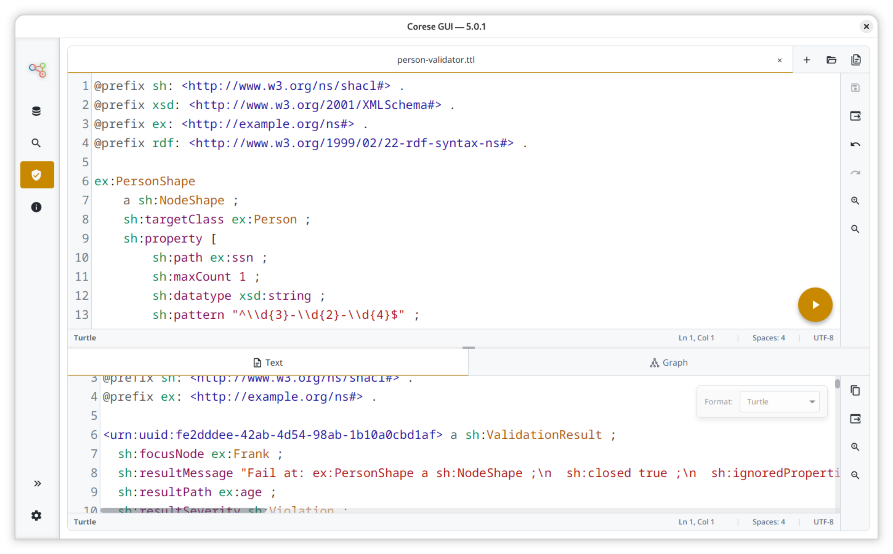
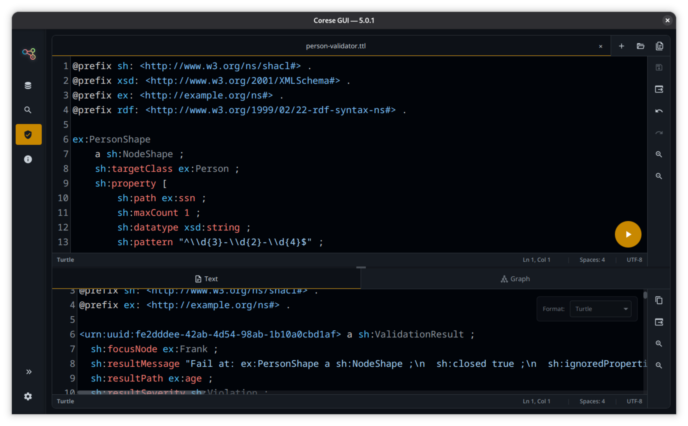
Corese ecosystem
corese-core: Java library for RDF processing and reasoning.
corese-command: command line interface for Corese features.
corese-server: SPARQL endpoint server and management utilities.
corese-python (beta): Python integration around Corese APIs.
Contributions and discussions
For questions or feedback, use the discussion forum. To report bugs or propose changes, open issue reports and pull requests.